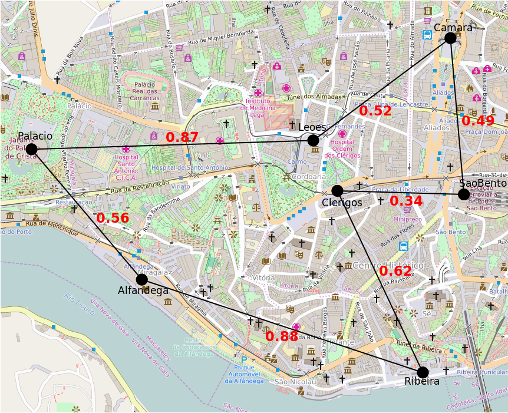
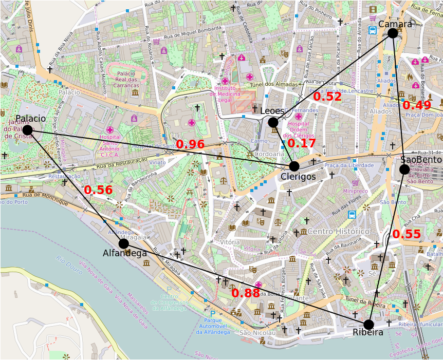
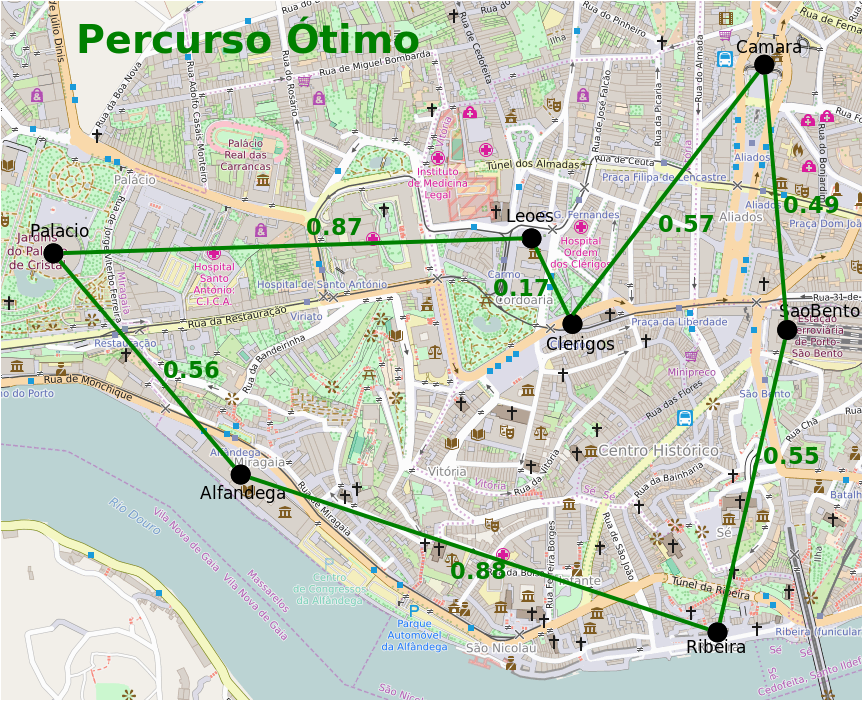

Se submeter no Mooshak, deverá submeter uma classe ED202 contendo um programa completo para resolver o problema (ou seja, com o método main).
O Aniceto chegou agora mesmo à Estação de S. Bento pronto para um dia em cheio a apanhar pokemons. Depois de ter falado com vários amigos, ele sabe exactamente onde estão os pokemons mais valiosos e a que sítios pretende ir: Torre dos Clérigos, Câmara Municipal, Ribeiro, Alfândega, Palácio de Cristal e Praça dos Leões. Partindo de S. Bento, o Aniceto pretende passar exactamente uma única vez por cada um destes sítios e depois voltar a S. Bento para apanhar o comboio de regresso a casa. Preguiçoso como é, pretende andar o menos possível, e por isso precisa da tua ajuda para saber que caminho tomar. Para te ajudar, ele fez uma tabela com as distâncias (em km) entre os vários sítios:
| SaoBento | Camara | Clerigos | Ribeira | Alfandega | Palacio | Leoes | |
|---|---|---|---|---|---|---|---|
| SaoBento | ------- | 0.49 | 0.34 | 0.55 | 0.95 | 1.30 | 0.45 |
| Camara | 0.49 | ------- | 0.57 | 1.03 | 1.17 | 1.33 | 0.52 |
| Clerigos | 0.34 | 0.57 | ------- | 0.62 | 0.64 | 0.96 | 0.17 |
| Ribeira | 0.55 | 1.03 | 0.62 | ------- | 0.88 | 1.41 | 0.79 |
| Alfandega | 0.95 | 1.17 | 0.64 | 0.88 | ------- | 0.56 | 0.64 |
| Palacio | 1.30 | 1.33 | 0.96 | 1.41 | 0.56 | ------- | 0.87 |
| Leoes | 0.45 | 0.52 | 0.17 | 0.79 | 0.64 | 0.87 | ------- |
O Aniceto pode escolher ir aos vários locais por qualquer ordem. Obviamente que a ordem que escolhe influencia fortemente o comprimento do percurso que vai fazer. As figuras seguintes ilustram dois possíveis caminhos e o respectivo comprimento:
 |
 |
|
| Total: 4.28km = 0.34+0.62+0.88+0.56+0.87+0.52+0.49 | Total: 4.13km = 0.55+0.88+0.56+0.96+0.17+0.52+0.49 |
Apesar de parecerem bons caminhos, nenhuma das imagens anteriores representa um percurso ótimo. De facto, o Aniceto pode percorrer apenas 4.09km se fizer o percurso da imagem seguinte:
 |
| Total: 4.09km = 0.55+0.88+0.56+0.87+0.17+0.57+0.49 |
Tens de ajudar o Aniceto a escolher o percurso ótimo, não só para esta sua vinda ao Porto, mas para qualquer outra viagem para apanhar Pokemons que ele tenha planeado!
Dado um conjunto de locais e a distância entre eles, tens de descobrir qual o tamanho do menor percurso que passa por todos os pontos voltando no final ao local inicial.
Na primeira linha do input vem um número N (3 ≤ N ≤ 10) indicando o número de locais a considerar. Na segunda linha vêm exactamente N palavras indicando o nome dos locais. Cada nome contém apenas letras e tem um tamanho entre 1 e 30. O primeiro local indicado é o sítio onde o Aniceto está inicialmente.
Seguem-se exactamente N linhas, cada uma com N números, indicando a matriz de distâncias entre os locais. A j-ésima coluna da i-ésima linha representa a distância entre o local i e o local j (verifica o exemplo para perceberes melhor). Esta matriz é garantidamente simétrica, ou seja, distância(i,j)=distância(j,i).
O output é constituído por uma linha contendo um único número indicando o comprimento do menor caminho que passa por todos os locais e volta ao local inicial, tal como atrás descrito. Este número deve vir arredondado a duas casas decimais.
7 SaoBento Camara Clerigos Ribeira Alfandega Palacio Leoes 0.00 0.49 0.34 0.55 0.95 1.30 0.45 0.49 0.00 0.57 1.03 1.17 1.33 0.52 0.34 0.57 0.00 0.62 0.64 0.96 0.17 0.55 1.03 0.62 0.00 0.88 1.41 0.79 0.95 1.17 0.64 0.88 0.00 0.56 0.64 1.30 1.33 0.96 1.41 0.56 0.00 0.87 0.45 0.52 0.17 0.79 0.64 0.87 0.00
(Nota que o exemplo de input corresponde à imagem do enunciado)
4.09
Conteúdo de Fernando Silva (DCC/FCUP), migrado de dcc.fc.up.pt/~fds/aulas/EDados/2526/praticas/problems/prob202.html.